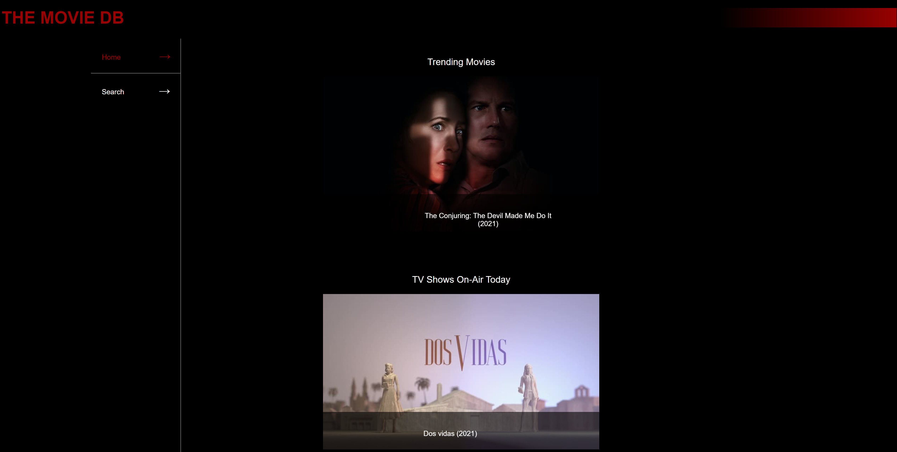
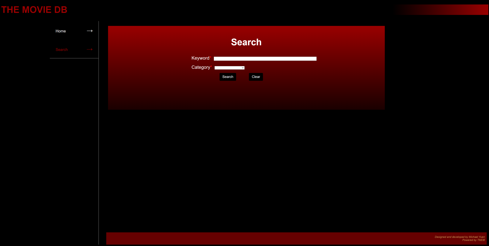
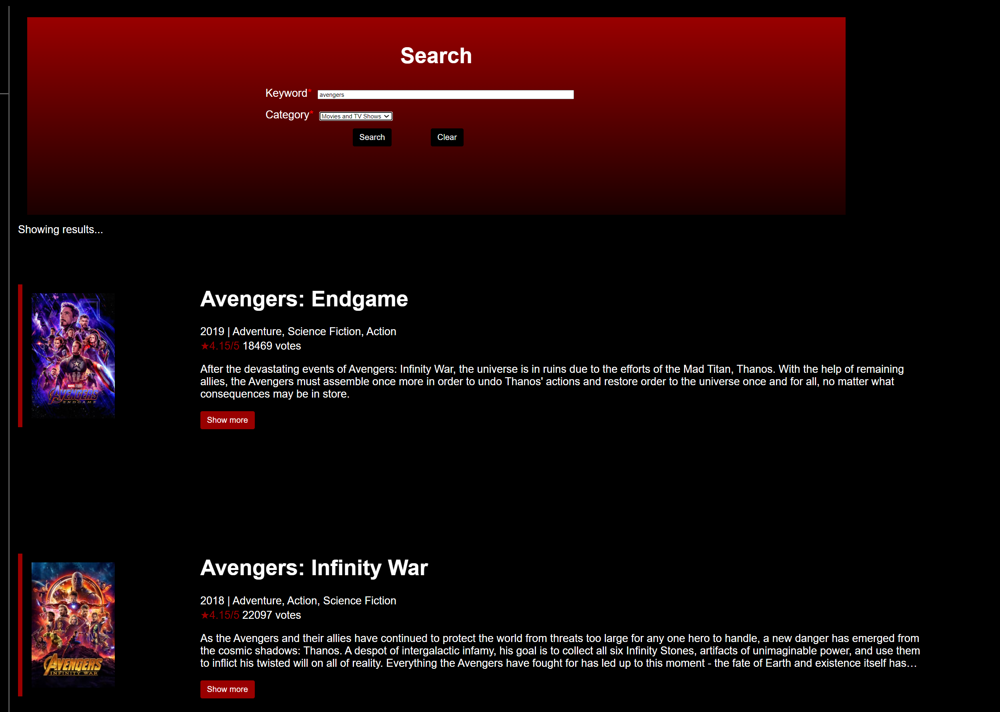
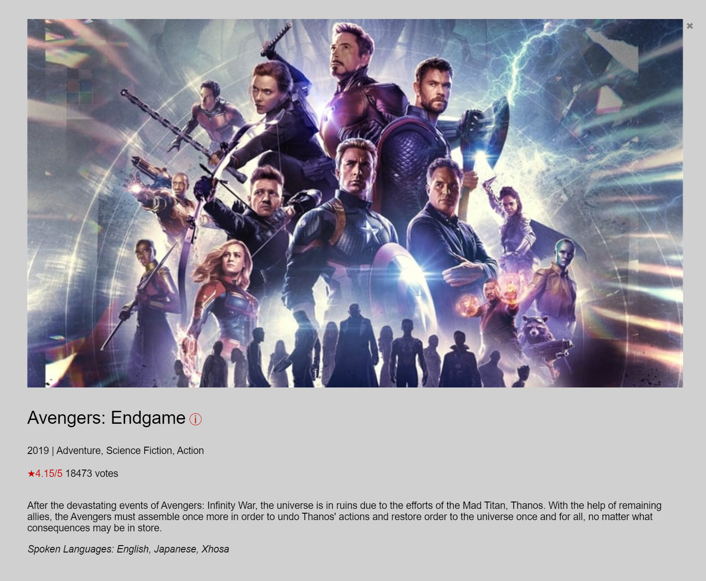
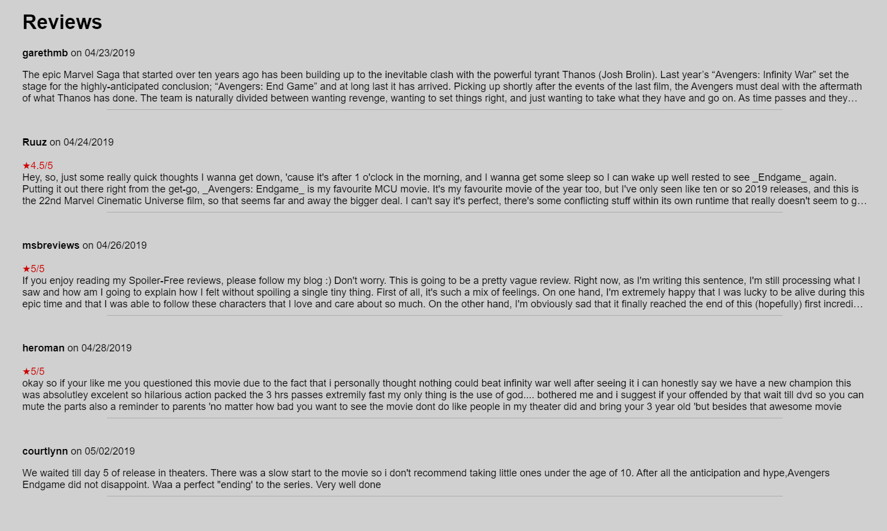
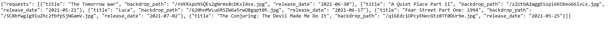
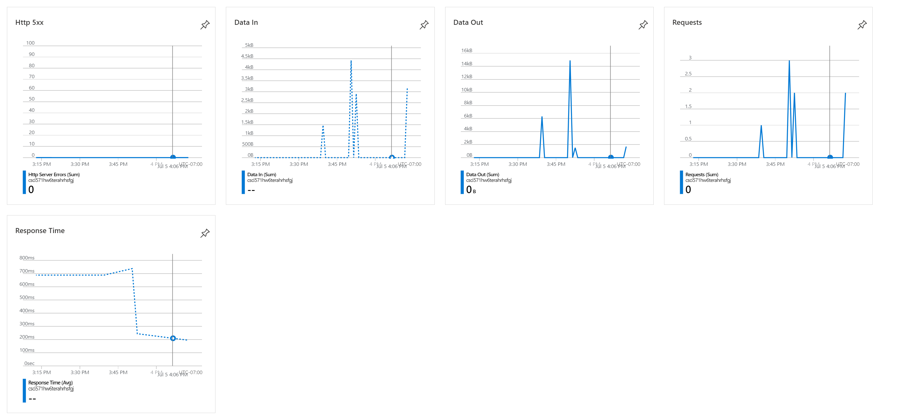

Movie Scraper
This website is designed for users to be able to search for movies through The Movie Database, finding details, cast, and reviews of a particular movie or TV show. The website design required use of a frontend and backend ecosystem to create a proper proxy server to pull JSON from the database. Python and flask were used to create that proxy server to split load pressure from directly calling TMDB APIs in the frontend, making it easier for the frontend to display the webpage under a heavier load. The frontend is not responsive, as the focus of the website is to emphasize good practice for backend.

Home Page
The Home page has two tabs, allowing for the user to swap between the tabs of searching and home. The Home page also has two slideshows, showing the recently trending movies and recently aired TV shows, gathering the data directly from the TMDB API to create the slideshows and showcase the movie and TV shows. This page is purely for demonstration of a working backend pulling from the database.

Search Page
The Search page has a simple UI, keeping the same home and search tabs to allow switching between the pages. The search feature allows for any keyword to scrape the TMDB API and shoot a dedicated HTTP request to the database, gathering a JSON request through the Python and Flask backend, and push the data to the page. The clear button and category button create a further division in search terms and utility.

Search Results
Upon shooting an HTTP Request to the TMDB API, the proxy server pulls the JSON to the frontend and shows the search results in a list. This proxy server and backend is used instead of pulling the JSON directly from the frontend in order to enact load balancing, make the code modular and separate based on function, and practice different mechanics in web technology. The power of being able to write the backend code in any language (that is fit for backend) rather than being stuck with the typical frontend frameworks and languages is extremely useful.
The results either pull from the movie category, the TV show category, or both movies and TV shows combined. These results show basic information of each media found, like titles, release dates and air dates, votes and average ratings, genres, description, and poster image. Each movie and TV show dynamically generates a button as well, which can be opened for movie and TV show details, including cast and review data.

Search Details
Clicking the dynamically generated button creates a modal box with the data in a better setting. The backdrop image, title, link to TMDB's movie details, average rating, vote count, date of release or first air date, genres, description, and spoken languages are shown within the details. This allows for the user that is interested in the particular movie or TV show to view the details of the movie or TV show in further detail after searching for the particular movie or TV show.
This section is mostly focused on frontend development and creating a better user interface for the user, as the proxy server's functionality is already done with the search features and the slideshows in the home page. Everything further is just added fluff and details showing the inner workings of the movie or TV show pulled from the proxy server.
Search Cast
Besides standard movie and TV show details, the user can access the cast of the particular movie or TV show. This lists the individual cast in a card based format, pulled at the same time as the search details. This is all within the modal box, laid out using a grid for each card without using Bootstrap or a similar framework.
The cast are laid out with each cast member's name, played character, and picture. The purpose of doing so is to continue working on fundamentals in HTML, CSS, and JS, focused on grids and modals, while exemplifying the knowledge of populating data through the JSON requests pulled from the original search by being able to push multiple HTTP requests in an asynchronous fashion.

Search Reviews
The user can also see the recent reviews of the search results. The section focuses on simple knowledge of HTML and CSS again with the dynamically generated reviews through the number of reviews hosted on TMDB for the particular movie or TV show. The reviews each contain their individual authors, date of writing, description up to a certain length, and overall rating given by the author.
Again, the section focuses on important elements in HTML, CSS, and JS, including modal box usage and knowing how to separate dynamically generated elements. Another important task is being able to populate data properly when the specified movie or TV show has no reviews: the reviews section is properly empty and null when this happens.

The Proxy Server and JSON
The proxy server is created using Python and Flask. A key part of why the backend was created is not only for load balancing, but also for the fact that interacting with the TMDB API is much easier using Python as a backend language, rather than pulling the data from the frontend directly. Above is an example of a JSON request that is found directly from the proxy server, pulling the first five results back from the slideshow in the home page.

Hosting on Azure
The backend and frontend are completely hosted on Azure, allowing for dynamically generated content at will as long the service is still working via Azure. Microsoft Azure allows me to adjust issues and fix bugs cleanly and easily, while keeping hosting on the cloud much simpler than if I were to go and host the web service directly using my own servers. I also have the power to start and stop the virtual machine at will, allowing me to display the content when I want to, conserving cost for hosting the service on the cloud.